それでもていていしたいっ！ [梅吉]
梅吉さんの最近のお気に入りのベッドはたか〜いところ。
![[猫]](https://blog.ss-blog.jp/_images_e/101.gif) なんやねん
なんやねん

ついてこんといてや
ハンガーラックの上に置いてある買い物カゴの中。
涼しい部屋だし下僕にちょっかい出されずにゆっくり眠れますw
ぱぁ〜と開いた足の指の間に下僕が指を突っ込んで来る心配もありません(｡-_-｡)
寝る気満々です！
が、誘うと付き合ってくれるのが梅吉の良いところ＾＾
（26秒です＾＾音が出ますよ。）
指をわしゃわしゃするとすぐに誘われちゃいます(⌒-⌒;
結構垂直になるんですが足を踏み外したことは一度もありません。
私も受け止める気満々で足を踏ん張りながら遊んでますよー。

気が済んだらこんな風にお休みです。
カゴの中に箱が入っているのでこんな風にいつも三角耳が見えてるのがツボですwww
 ↑ガブッと一押し↑
↑ガブッと一押し↑
ハンガーラックの上に置いてある買い物カゴの中。
涼しい部屋だし下僕にちょっかい出されずにゆっくり眠れますw
ぱぁ〜と開いた足の指の間に下僕が指を突っ込んで来る心配もありません(｡-_-｡)
寝る気満々です！
が、誘うと付き合ってくれるのが梅吉の良いところ＾＾
（26秒です＾＾音が出ますよ。）
指をわしゃわしゃするとすぐに誘われちゃいます(⌒-⌒;
結構垂直になるんですが足を踏み外したことは一度もありません。
私も受け止める気満々で足を踏ん張りながら遊んでますよー。
気が済んだらこんな風にお休みです。
カゴの中に箱が入っているのでこんな風にいつも三角耳が見えてるのがツボですwww
スマアシじゃない四つ足駆動 [梅吉]
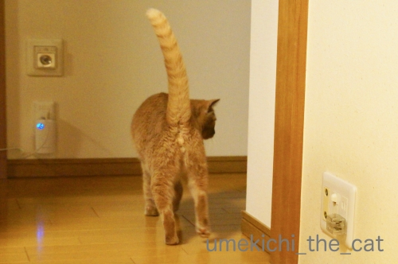
何かを警戒する梅吉さん。
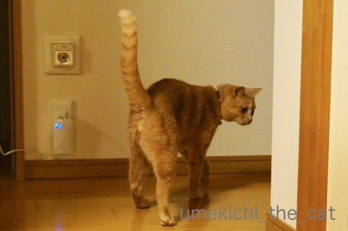
「何か」キターっ！！

四つ足のおかーさんです(*>艸<)
ミニカーにぐいぐい迫ってこられるのも嫌いですが
四つんばになったのおかーさんに迫ってこられるのも面白くない様子w
この写真は梅吉が私にすり寄ってきているのではなく
逃げようとする進路を塞がれてワタワタしているところです(⌒-⌒;

ちょっとー、嫌がることないじゃないのよー。

あっ、待ってください！
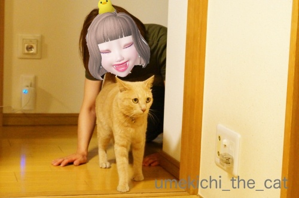
スマアシミニカーはぶつからないように止まってくれますが
おかーさんは止まりませんよ。
止まらないどころかわざとにぶつかってきて
くんくんスーハーがしつこいですwww
酔っ払いだし〜(⌒-⌒;
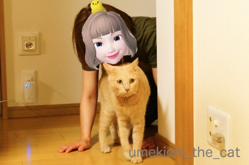
真剣に逃げる梅吉さんでした(≧▽≦)
でもね、止めると
と呼びつけられます(*>艸<)
キロキロお目目と平らなお耳 [梅吉]

ソファの背もたれ越しに目があったので背もたれの陰に身を潜めてみる。

梅吉も身を低くしてます(*>艸<)
（写真を撮ってもらうのに移動しましたよ）

私がさらに身を低くすると覗き込む梅吉w
ああ・・・平べったく（北海道弁）なったお耳とまあるい頭がたまりません！！
このキロキロ〜っとしたお目目も可愛いんですよねー0(≧▽≦)0
この姿が見たくて時々隠れてます。
住吉大社の四宮さんと三宮さん。
現在こんな風に令和元年を寿いでます。
スマアシvs梅吉 [梅吉]
梅吉さんの横を走り抜けていく軽トラのミニカー。
 おっとがとあるルートから入手してきました＾＾
おっとがとあるルートから入手してきました＾＾衝突回避支援ブレーキ機能搭載軽トラ（長っ）
HIJET TRUCK By DAIHATSU
のミニカーです。
衝突回避の支援システムを「スマアシ」
（スマートアシスト）と呼ぶようで
箱には「スマアシミニカー」って書いてました。


面構えはこんな感じ。スイッチをオンにするとちゃんとライトもつきます。
スマアシミニカー、梅吉さんに向かってGo！
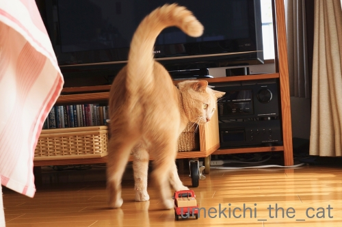
足早に避ける梅吉さんwww
障害物が有るとちゃんと止まるのですが梅吉が避けちゃうのでどこまでも走っていきます。
この時はこのまま直進してテレビ台の下に入り込んでしまいました(-_-メ)
スマアシミニカーを取ろうと棒を持って奮闘するおかーさんに
ちょっかいを出そうと興奮する、新しい遊びを発見した梅吉さんでした(*>艸<)
にゃんこは逃げていくものは追いかけますが
迫ってくるものは避けようとしますよねー。
そして棒を持って隙間をゴソゴソする人が大好物0(≧▽≦)0
ちゃんとストップする賢いスマアシミニカー。証拠映像。
（7秒。音無です＾＾）
バスタブでぐねぐね [梅吉]
バスタブでぐねぐねする梅吉さんwww

ここでこんな風に遊べるんだから
クリアハンモックにだって出来るはず！！
今日は簡単更新にて。
前記事のお返事も書けてないのでコメント欄も閉じてますm(_ _)m
〜〜〜〜〜追記〜〜〜〜〜
わー(＠◇＠)
コメント欄閉じ忘れちゃった(⌒-⌒;
せっかくzombiekongさんとriverwalkさんがコメントしてくださったので
いつも通りコメント大募集ですw
お二人とも遅い時間にコメントありがとうございます。
私はちゃんと寝ているので倒れませんよー＾＾
お二人こそちゃんと寝てくださいね！
ぐねぐね写真だけじゃコメントつけにくいわぁ・・・かもしれないので
皆様への質問！
ご自分のブログって1日に何回くらいご覧になりますか？
コメントはあったほうが嬉しいですよね？？
ご自分のブログ（自分で書いた内容の）の満足度ってパーセンテージで表すとどのくらいですか？？？
で、皆さん大体何時頃に寝てますか？？？？(*>艸<)
例によってお返事は遅いですがよろしくお願いいたします(^_－)☆
↑ガブッと一押し↑
ここでこんな風に遊べるんだから
クリアハンモックにだって出来るはず！！
今日は簡単更新にて。
前記事のお返事も書けてないのでコメント欄も閉じてますm(_ _)m
〜〜〜〜〜追記〜〜〜〜〜
わー(＠◇＠)
コメント欄閉じ忘れちゃった(⌒-⌒;
せっかくzombiekongさんとriverwalkさんがコメントしてくださったので
いつも通りコメント大募集ですw
お二人とも遅い時間にコメントありがとうございます。
私はちゃんと寝ているので倒れませんよー＾＾
お二人こそちゃんと寝てくださいね！
ぐねぐね写真だけじゃコメントつけにくいわぁ・・・かもしれないので
皆様への質問！
ご自分のブログって1日に何回くらいご覧になりますか？
コメントはあったほうが嬉しいですよね？？
ご自分のブログ（自分で書いた内容の）の満足度ってパーセンテージで表すとどのくらいですか？？？
で、皆さん大体何時頃に寝てますか？？？？(*>艸<)
例によってお返事は遅いですがよろしくお願いいたします(^_－)☆
タグ：バスタブ
夏の始まり、令和初 [梅吉]
連休中にシーツバフバフ遊びを思い出した梅吉さん。

朝、ベッドメイクを始めると飛んできてマットレスとシーツの間に飛び込みます。
シーツをバフバフとはためかせると興奮してシーツの下を這いずり回るのです。
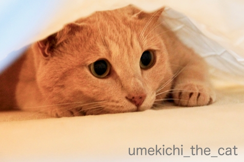
バフバフは激しければ激しいほど楽しいらしい。
この期待感に満ち満ちたお顔！
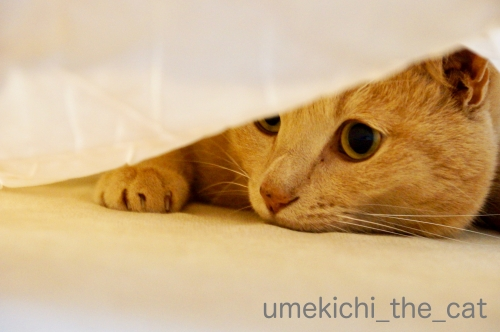
下僕は一生懸命バフバフしますよw
朝から汗かくわーwww
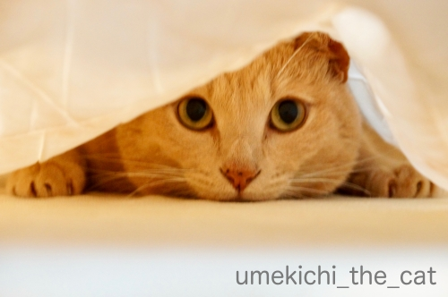
もっとやってや
と仰せのようですね(⌒-⌒;
結構体力使うんですが腕のエクササイズと思いがんばります！
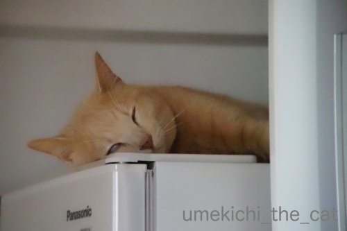
連休後半暑くなると白目が観測されるようになりました。
今シーズン、そして令和初のオフィシャルな白目を昨日5月6日にパチリ。
折も昨日はちょうど立夏の日。夏ですね〜。
梅吉さん、二十四節気を身を以てお示しくださいました＾＾
↑ガブッと一押し↑
朝、ベッドメイクを始めると飛んできてマットレスとシーツの間に飛び込みます。
シーツをバフバフとはためかせると興奮してシーツの下を這いずり回るのです。
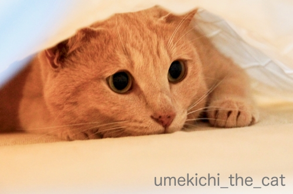
バフバフは激しければ激しいほど楽しいらしい。
この期待感に満ち満ちたお顔！
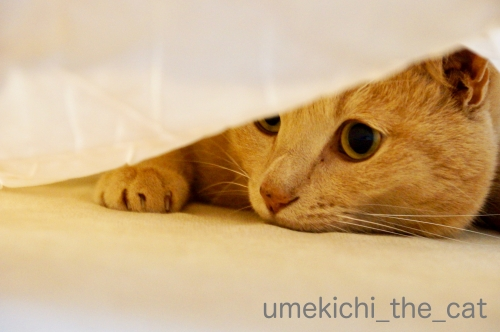
下僕は一生懸命バフバフしますよw
朝から汗かくわーwww
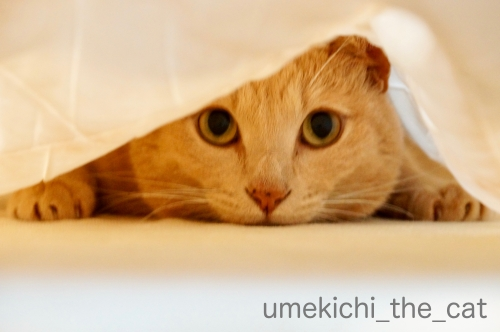
と仰せのようですね(⌒-⌒;
結構体力使うんですが腕のエクササイズと思いがんばります！
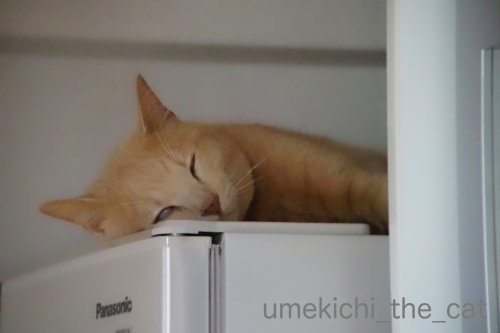
連休後半暑くなると白目が観測されるようになりました。
今シーズン、そして令和初のオフィシャルな白目を昨日5月6日にパチリ。
折も昨日はちょうど立夏の日。夏ですね〜。
梅吉さん、二十四節気を身を以てお示しくださいました＾＾
令和の書き初め [梅吉]
令和の御代が始まりましたね＾＾
新しい時代を迎えた喜びを梅吉さんが全身で表現してくれました。

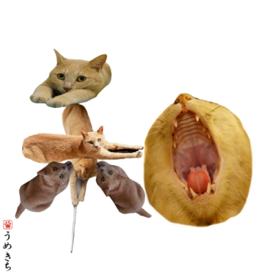
「令和」清々しく和やかな時代でありますように。
（書き初めは2019年になってから二度目なんですよー。）
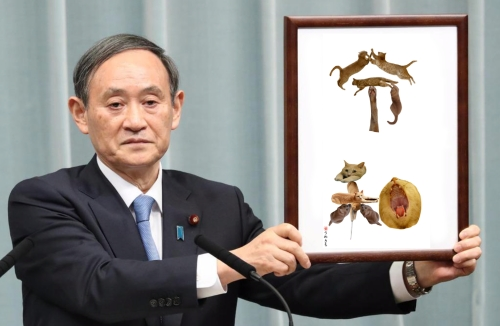
やっぱりこの方とのコラボは外せない！
↑ガブッと一押し↑
新しい時代を迎えた喜びを梅吉さんが全身で表現してくれました。
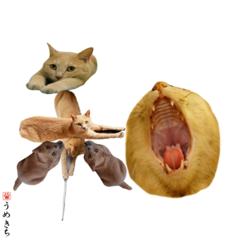
「令和」清々しく和やかな時代でありますように。
（書き初めは2019年になってから二度目なんですよー。）
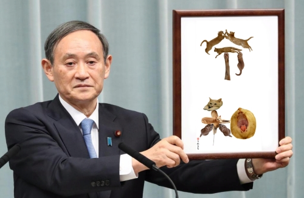
やっぱりこの方とのコラボは外せない！
開放的だったり包まれたり [梅吉]
暑い日が続いたと思ったら急に寒くなったり。
羽布団をしまった我が家は間に合わせに梅吉のブランケットを借りて寝ておりますwww
このところの梅吉さんは
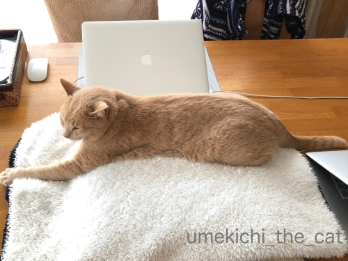
膝掛けの上で長くなったり
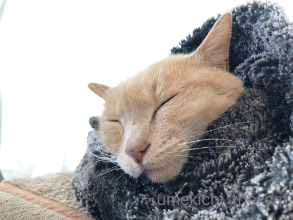
タオルにくるまってぶちゃ顔ねんねだったり
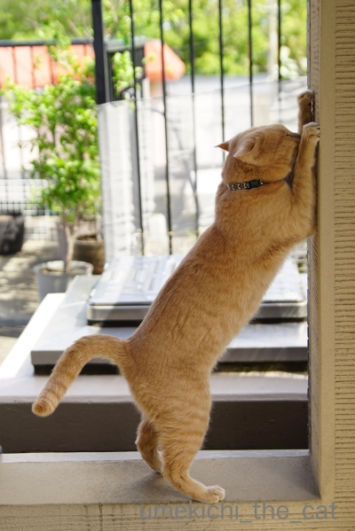
ベランダで外壁をガリガリしたり
（腰が入ってますよねー(*>艸<)）

お届け物の箱に中のものを出さないうちに入り込んだり(⌒-⌒;
予期せぬ寒さに丸まって寝ている時間も長いですが遊ぶ時は元気いっぱいです！
連休に入ってから何かと時間がなくてPCの前にゆっくり座ることが出来ません(-_-メ)
スマホを手に取る時間もない時があって・・・
皆様のところへのブログ巡回も滞っておりますm(_ _)m
ZEPETOも夜まで反応できない時があったりして付き合い悪い人になってますwww
来月（令和ですね！）3日以降は時間が取れそうかな〜。
前々記事（こちらはこっそり書きましたw）前記事のお返事も放置状態でしたが
年号が変わる前に書く予定でーす＾＾（たぶん）
色々溜まった状態なので今日はコメント欄を閉じてます。
（51秒 音が出ます！）
お湯張りの時にバスタブで余裕の梅吉さん。
白湯を飲むのが健康の秘訣だとか！？
羽布団をしまった我が家は間に合わせに梅吉のブランケットを借りて寝ておりますwww
このところの梅吉さんは
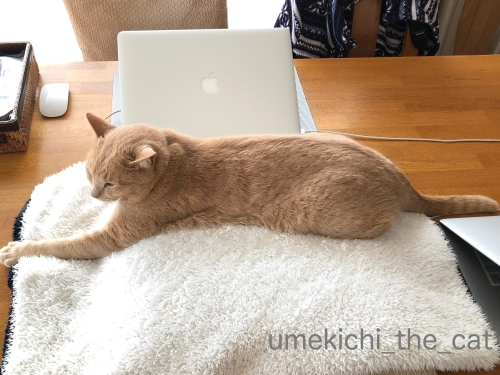
膝掛けの上で長くなったり
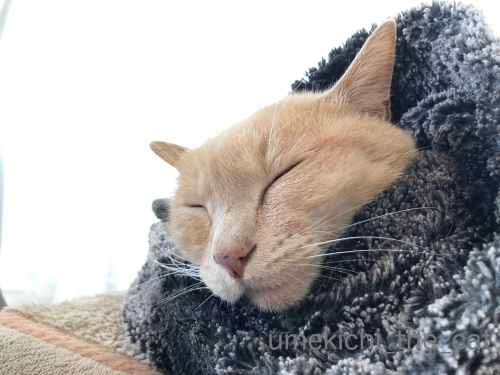
タオルにくるまってぶちゃ顔ねんねだったり
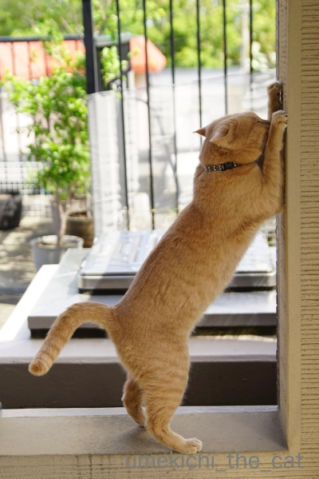
ベランダで外壁をガリガリしたり
（腰が入ってますよねー(*>艸<)）
お届け物の箱に中のものを出さないうちに入り込んだり(⌒-⌒;
予期せぬ寒さに丸まって寝ている時間も長いですが遊ぶ時は元気いっぱいです！
連休に入ってから何かと時間がなくてPCの前にゆっくり座ることが出来ません(-_-メ)
スマホを手に取る時間もない時があって・・・
皆様のところへのブログ巡回も滞っておりますm(_ _)m
ZEPETOも夜まで反応できない時があったりして付き合い悪い人になってますwww
来月（令和ですね！）3日以降は時間が取れそうかな〜。
前々記事（こちらはこっそり書きましたw）前記事のお返事も放置状態でしたが
年号が変わる前に書く予定でーす＾＾（たぶん）
色々溜まった状態なので今日はコメント欄を閉じてます。
（51秒 音が出ます！）
お湯張りの時にバスタブで余裕の梅吉さん。
白湯を飲むのが健康の秘訣だとか！？
かつお祭り [梅吉]
これ、な〜んだ！

ふんふんふんふん・・・・
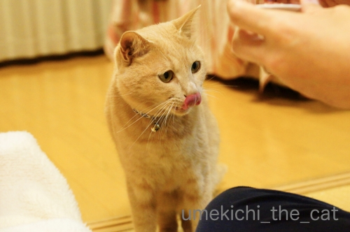
うま〜い！
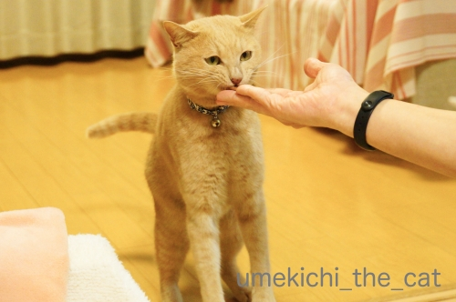
梅吉さん、おしっぽぶんぶんですw
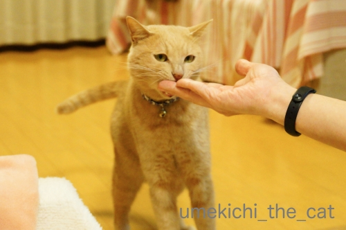
お給仕係のおとーさんの指も味わっていると思われますw
それにしても美味しいもの食べる時は悪いお顔になりますねー！(*>艸<)
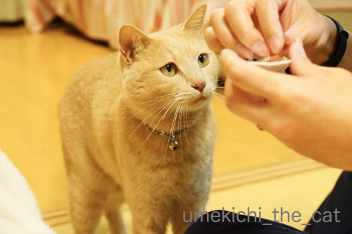
かつおが大好きなのでずんずん迫って来ますよ。

おっきなお口でがぶーっとw
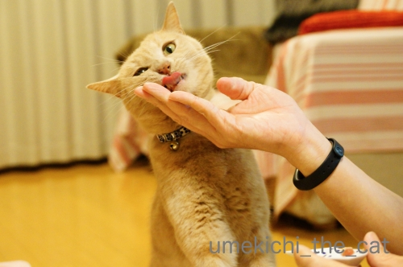
美味しいですかー0(≧▽≦)0
梅吉、先日推定誕生日を迎え４歳になりました。
我が家は不確定なお誕生日よりもうちの子記念日重視なので
特にお祝いというわけではなかったのですが・・・
ニンゲンのお夕飯と梅吉の好物がちょうど重なってカツオ祭り＾＾
梅吉はカツオの他にマグロ、サンマ、アジ、ニジマス、アユが好き。
お肉は鳥、牛、羊Love。豚肉は生食が不安なので与えたことはありません。
興味津々なんですけどね。
先々代ねこはピーマンとしめじを炒めたものが大好きだったので
テーブルに置いておくと試食されました(-_-メ)
梅吉はそういう変わった好みはないなぁ・・・
あ！コーヒー舐めようとします！もちろん止めますけどwww
みなさんのおうちの毛深い方たちは変わったものを食べますか？
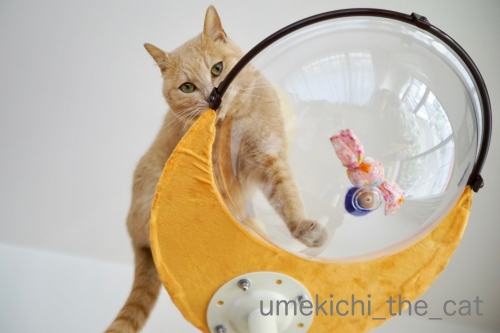
最近の嬉しいショットはこれくらい。
クリアハンモックへの道のりは険しい・・・
それだけ後々の楽しみが増えるってものですけど(^_－)☆
あおくん、梅吉にハンモックの使い方レクチャー、お願い！！
さてさて平成の御世も終わろうとしています。
10連休、我が家はぽつぽつ近場にお出かけしてあとは梅吉とゆっくり過ごす予定です。
更新＆皆様へのご訪問は大変不定期になると思われます。お許し下さい。
みなさまどうぞ良いお年をお迎えくださいませm(_ _)m
↑ガブッと一押し↑
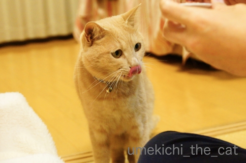
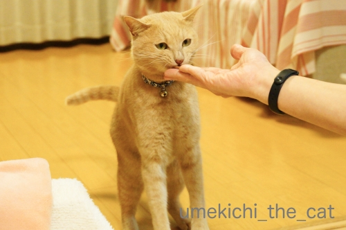
梅吉さん、おしっぽぶんぶんですw
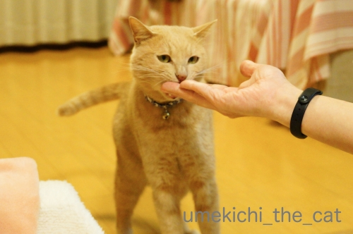
お給仕係のおとーさんの指も味わっていると思われますw
それにしても美味しいもの食べる時は悪いお顔になりますねー！(*>艸<)
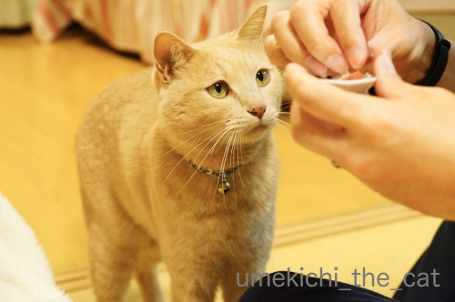
かつおが大好きなのでずんずん迫って来ますよ。
おっきなお口でがぶーっとw
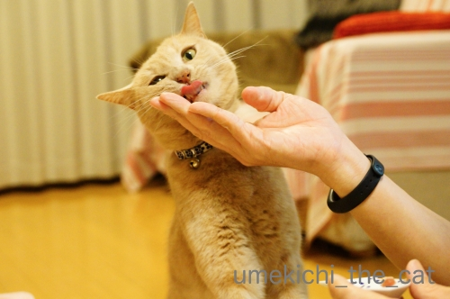
美味しいですかー0(≧▽≦)0
梅吉、先日推定誕生日を迎え４歳になりました。
我が家は不確定なお誕生日よりもうちの子記念日重視なので
特にお祝いというわけではなかったのですが・・・
ニンゲンのお夕飯と梅吉の好物がちょうど重なってカツオ祭り＾＾
梅吉はカツオの他にマグロ、サンマ、アジ、ニジマス、アユが好き。
お肉は鳥、牛、羊Love。豚肉は生食が不安なので与えたことはありません。
興味津々なんですけどね。
先々代ねこはピーマンとしめじを炒めたものが大好きだったので
テーブルに置いておくと試食されました(-_-メ)
梅吉はそういう変わった好みはないなぁ・・・
あ！コーヒー舐めようとします！もちろん止めますけどwww
みなさんのおうちの毛深い方たちは変わったものを食べますか？
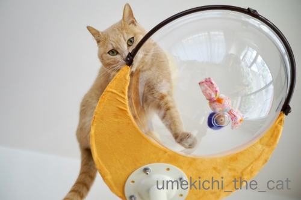
最近の嬉しいショットはこれくらい。
クリアハンモックへの道のりは険しい・・・
それだけ後々の楽しみが増えるってものですけど(^_－)☆
あおくん、梅吉にハンモックの使い方レクチャー、お願い！！
さてさて平成の御世も終わろうとしています。
10連休、我が家はぽつぽつ近場にお出かけしてあとは梅吉とゆっくり過ごす予定です。
更新＆皆様へのご訪問は大変不定期になると思われます。お許し下さい。
みなさまどうぞ良いお年をお迎えくださいませm(_ _)m
桜納め [梅吉]
関西の桜は八重桜も終盤。見納めの時期です。
そんな頃にようやく我が家の盆栽の桜が咲きました。
御殿場桜という品種です。

モデルさんに撮影協力していただきました＾＾
昨年秋の台風の影響でしょうか。今年の盆栽は花付きが悪いです。
咲かない鉢も多いのですよ(-_-メ)

この桜も枝の上の方は花が付きませんでした。残念！来年は復活してくれるかなぁ・・・
モデルさんは近所の神社の子供祭りの音が気になってしょうがない様子。
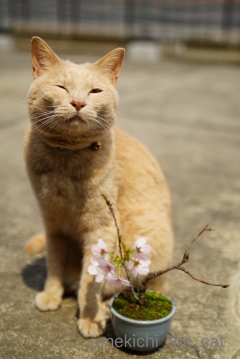
この日はもう初夏の陽気でした。ベランダにいると暑かったです。
眩しい日差しに梅吉もむっふ〜ん顔＾＾
今日は後半長いので梅吉話題はこの辺で！

カフェオレ色の梅吉

梅吉 2023年8月10日 永眠


梅吉と出会った譲渡会

犬猫の理由なき殺処分ゼロ
妄想広告
UMEKICHI 光

爆発的に早い！
時々攻撃的！
Thanks to Mr.Boss365
爆発的に早い！
時々攻撃的！
Thanks to Mr.Boss365